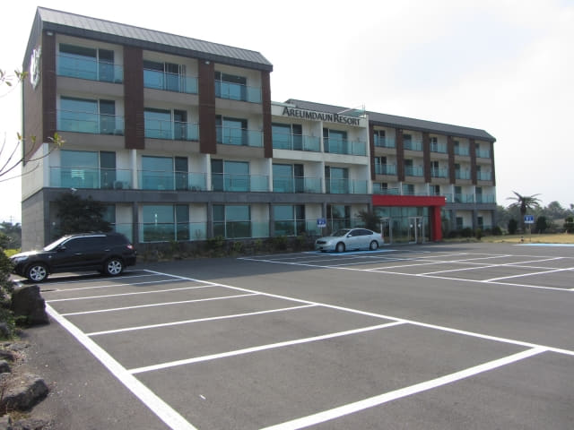

在涉地可支水族館食堂用完午餐, 按計劃是步行往涉地可支出口那裡搭乘計程車返酒店, 很幸運地在途中碰到一輛接送乘客來這裡的計程車, 剛好停在我們前面不遠處, 就這樣很順利地登上了計程車, 約十分鐘便返回美麗度假村。下了車, 時間約下午二時四十分。接著是乘巴士往濟州市。

美麗度假村的環境真是很好! 十分推薦這酒店給大家!
美麗度假村步行往「오조해녀의집」巴士站
接著在一樓服務處取回行李, 於下午二時五十五分離開住宿了兩晚的美麗度假村, 有些依依不捨的感覺。

離開美麗度假村, 沿城山邑日出海岸走往巴士站。雖然這段路來來回回已經走過幾次, 但仍忍不住不斷停下來拍照, 留下多些回憶。

「오조해녀의집」巴士站 乘 701 號巴士往濟州市
於下午三時十五分抵達「오조해녀의집」巴士站。我們兩天前便是從表善乘 701 號巴士來城山, 就是在這巴士站下車的, 現在同樣是搭乘 701 號巴士往濟州市。想一想, 我們在西歸浦往表善也是搭乘 701 號巴士的! 真是單是這條巴士路線已經可以環繞濟州島大半圈。來濟州島自助遊, 最大好處是不用花太多時間在準備交通資料。
「오조해녀의집」巴士站比較完善, 除了有上蓋的簡單候車室, 還有顯示下一班巴士到站時間。噢! 下一班 701 號巴士還有十七分鐘才靠站。
離巴士靠站還有差不多二十多分鐘, 便在巴士站四處逛逛, 看看有沒有新發現。
剛好有幾位海女趁水退往城山浦撈貝殼。
巴士站附近的汪汪。
701 號巴士約下午三時半駛來靠站。登上了巴士, 正式和城山拜拜啦!
濟州市
巴士約下午四時五十分抵達濟州市的「제일교 동문시장입구」巴士站。我們在濟州市下榻 濟州島羅波羅酒店 호텔로베로 Robero Hotel Jeju)。按地圖所示, 酒店離巴士站並不太遠, 沿大街一直往下走便是, 估計約十五分鐘。